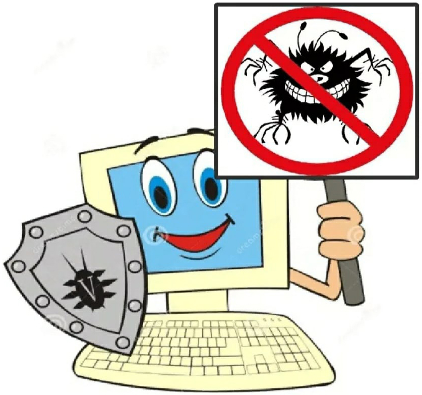
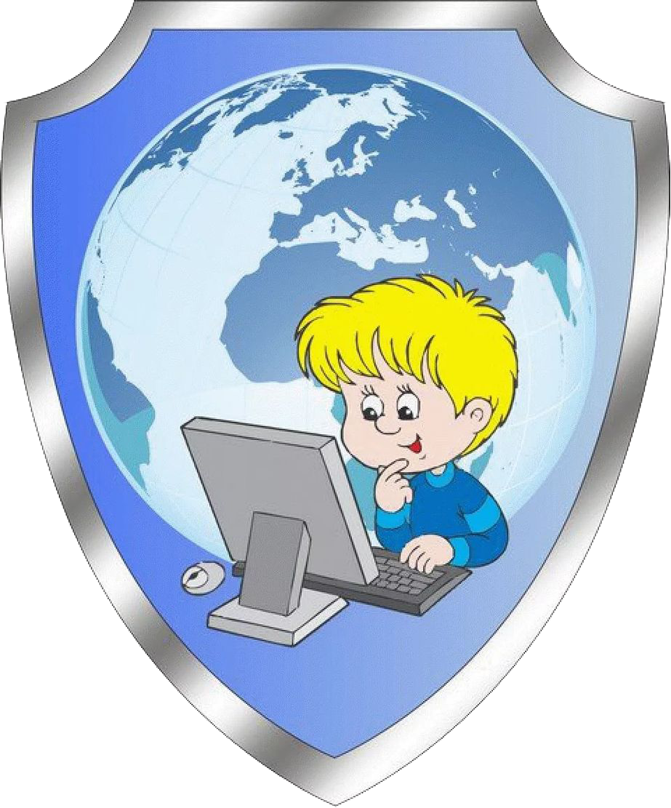
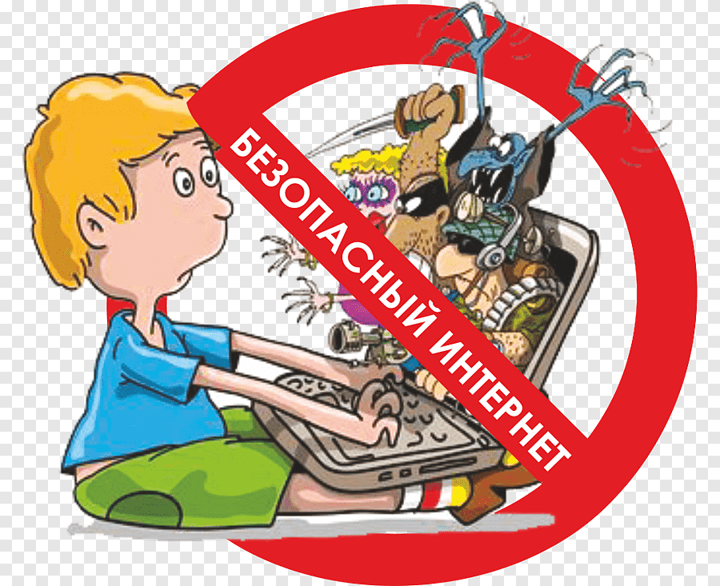

Информационная безопасность — это комплекс мер,
которые нужны, чтобы защитить от утечки или взлома программы,
компьютерные системы и данные. Еще так называют отрасль, которая занимается этими мерами
Ребенок в интернете.
Памятка для родителей.
Памятка для родителей
Расскажите ребенку, что Интернет - помощник в поиске информации и в образовании.
Предупредите ребенка о том что в сети он может встретиться с опасным контентом.
Предупредите ребенка о группах и сообществах, корорые могут принести ему вред.
Расскажите ребенку, что в Интернете человек может быть не тем, за кого он себя выдает.
Расскажите ребенку о мошенничестве в Сети, лотереях, розыгрышах.
Приучите детей, что нельзя раскрывать свои личные данные в Интернете.
Беседуйте с детьми об их виртуальных друзьях. если ребенок хочет встретиться с Интернет-другом в реальной жизни, то перед этим он обязательно должен посоветоваться с родителями.


В первую очередь, объясните своему ребенку, что:
при общении использовать только имя или псевдоним (ник);
номер телефон, свой адрес, место учебы нельзя никому сообщать;
не пересылать свои фото;
без контроля взрослых не встречается с людьми, знакомство с которыми завязалось в Сети.
Научите детей следовать нормам морали, быть воспитанными даже в виртуальном общении
Ученики будьте аккуратнее в интернете
Правила безопасности в интернете
Никогда не рассказывай о себе незнакомым людям в Интернете: где ты живешь и учишься, не сообщайте свой номер телефона, где работают твои родители и номера их телефонов.
Никогда не отвечай на сообщения от незнакомцев в Интернете и не отправляй им смс. Если незнакомый человек предлагает встретиться или пишет тебе оскорбительные сообщения - сразу скажи об этом родителям.
Всегда спрашивай родителей о непонятных вещах, которые ты встречаешь в Интернете. Они расскажут тебе, что можно делать, а что нет.
Если в Интернете ты решил скачать картинку, игру или мелодию, и тебя просят отправить смс - не делай этого! Ты можешь потерять деньги, которые мог бы потратить на что-то другое.

Если вы все усвоили, то проверьте свои знания и пройдите опросник